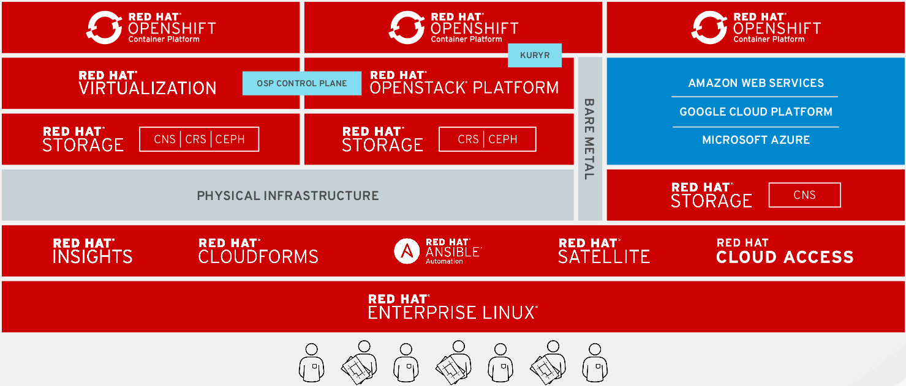

开源云方案
在当前的 IT 大环境下，不管是互联网公司还是传统的企业（电信、FSI、中小企业）都在使用开源技术构建他们的 IT 系统，因为开源具有完善的生态体系，以及驱动创新的领先技术，例如：在企业级服务器操作系统这个邻域使用开源 Linux 或 Linux 的一些衍生版本；区块链，超级账本等底层都是基于开源软件如 Hyperledger；机器学习、认知计算领域都依赖于开源软件 TensorFlow。
那么基于基于开源技术堆栈构建一套云解决方案可行性如何？Cloud Labs 就是基于开源技术堆栈去打造一个开源私有云/多云解决方案，架构如下

OpenShift 可以在所有不同提供商的基础设施上运行，包括虚拟化、OpenStack、公有云等。对 OpenShift 的管理，所有云和基础设施提供商都以类似的方式通过相同的工具进行管理。通过标准化工作负载层，开源云解决方案基于 OpenShift 获得了容器和容器化应用程序的所有优点，可以帮助您专注于专注与业务的实现与创新。而不必考虑如何在不同的云中以不同方式实现它。
-
OpenShift 是一款容器应用平台，它将 Docker 和 Kubernetes 技术带入企业。无论您采用何种应用架构，OpenShift 都能让您在任意架构中（公共或私有云中）轻松、快速实现应用的构建、开发和部署。无论是在 企业内部，公共云，或是托管环境中，您都能凭借这一备受业务青睐的平台，快速您的最新创意推向市场，从而在激烈的市场竞争中脱颖而出。
-
OpenStack 平台旨在为构建创建、部署、管理和扩展安全可靠 和管理开放型私有云、公共云提供安全、可扩展的技术基础，依靠 Linux 作为其服务的操作环境,支持访问硬件资源,以及将第三方资源与现有系统或新系统进行整合。此外, OpenStack 依托底层的 Linux 提供卓越的整体系统性能、可扩展性和数据安全性，同时也为在虚拟环境内运行的客户机应用提供操作系统。
-
CEPH、Gluster 等开源、软件存储提供稳健可靠、高度可扩展的文件存储系统和块存储与对象存储平台，为需要部署公共云或私有云的企业提供支持。同时 CEPH 也是 OpenStack 用户投票选出的最佳存储产品。
-
Ansible 是一款简单、无代理的自动化平台，可有效改善您的当前业务流程和应用迁移，以优化业务操作；同时帮助您的企业采用单个编程语言，轻松实现 DevOps（开发运营）业务实践。Ansible Tower 是一种集中化 API，支持 Ansible 自动化和 Ansible 图形用户界面。
-
CloudForms 是一款全面的 IaaS 云管理平台，提供适用于虚拟环境和云基础架构的自助服务，同时保持安全及合规性。让您专注于支持服务而非系统管理任务，从而轻松实现云环境中的服务交付。